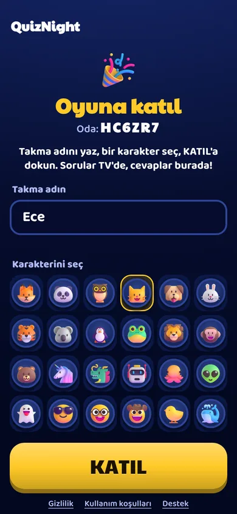
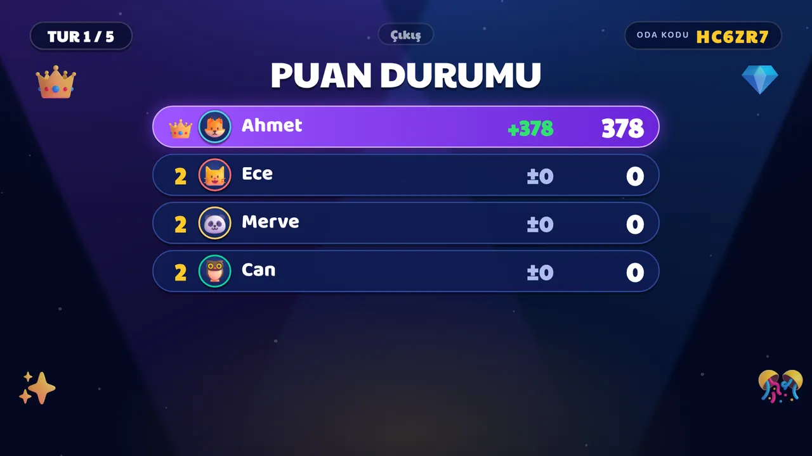
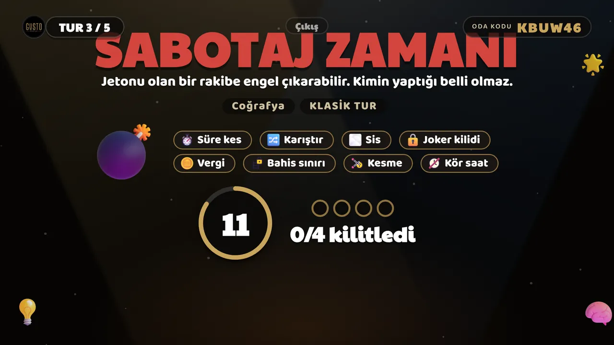

Kılavuz
QuizNight nasıl oynanır
TV sahne, telefon kumanda, sunucu oyun yöneticisi. Bu kılavuzdaki süreler ve puanlar oyunun gerçek ayarlarından alındı; oyun güncellendikçe sayılar değişebilir.
Hızlı başlangıç
QuizNight 2 ile 8 kişiyle oynanır. Gereken: tarayıcısı olan bir ekran (TV, bilgisayar, projeksiyon) ve herkesin kendi telefonu.
- TV'de: oyunun adresini aç ve Oyun Başlat'a bas. Ekranda büyük bir QR kod ve oda kodu belirir.
- Telefonlarda: kamerayla QR'ı okut ya da Oyna sayfasındaki kutuya oda kodunu yaz.
- Takma ad ve karakter: takma ad 2 ile 16 karakter; karakteri listeden seç ve Katıl'a dokun.
- Lider (adının yanında taç olan ilk oyuncu) oyunu başlatır; en az 2 oyuncu gerekir.
Aynı Wi-Fi şart değil: televizyon evde, bir oyuncu mobil veride olabilir. Bütün iletişim internet üzerinden sunucuyla yapılır.


Odaya katılma ve lobi
Lobide lider telefondan şunları ayarlar:
- Soru sayısı: 5, 10, 15 ya da 20 (varsayılan 10).
- Zorluk: Kolay, Orta ya da Zor; oyunun zorluk yöneticisi seçime göre soruları ayarlar.
- Kategoriler: hepsi karışık ya da seçtiklerin.
- Rahatsız edici efektleri azalt: her oyuncu kendi telefonunda açabilir; sis ve karıştırma yerine hafif bir süre kısaltması uygulanır.
Telefon kapanır ya da bağlantı koparsa aynı tarayıcıdan oyuna yeniden gir; yerine dönersin. Liderin bağlantısı kopsa lider rolü başkasına geçebilir.
Bir turun akışı
Her soru aşağıdaki sırayla ilerler. Süreleri sunucu tutar; telefon yalnızca ne yapmak istediğini bildirir.
| Aşama | Ne olur | Süre |
|---|---|---|
| Risk zamanı | Bahsini seç (Güvenli, Risk, Yüksek), istersen Çifte Hak ya da başka bir risk kullan, Hazırım de. | 12 s (Risk ve Final turlarında 16 s) |
| Sabotaj zamanı | Jetonu olanlar bir rakibe engel çıkarabilir; kimin yaptığı belli olmaz. Jetonun yoksa sakin bir bekleme ekranı görürsün. | 12 s (3. turdan itibaren) |
| Soru ve cevap | Soru TV'de okunur, dört şık telefonunda belirir. Şıklar renk, harf ve şekil taşır. Kalan süreye göre hız bonusu kazanırsın. | Tur türüne göre 12 ile 25 s |
| Kilit ve ortaya çıkış | Herkes cevaplayınca ya da süre bitince kilitlenir. Doğru cevap, kimin ne seçtiği ve kısa bir "biliyor muydun" notu gösterilir. | Birkaç saniye |
| Puan tablosu | Puanlar işlenir, güçlerin sonuçları (Kalkan, Düello, Havuz…) gösterilir, sıralama güncellenir. | Birkaç saniye |



Telefonda soru metni varsayılan olarak gizlidir; sahne TV'dir. "Soruyu göster" düğmesiyle metni telefonda da açabilirsin.
Tur türleri
Oyun bir dizi tur türünü karıştırır. Taban puan doğru cevap içindir; hız bonusu kalan süreyle orantılıdır ve bahisle çarpılmaz.
| Tur | Cevap süresi | Taban puan | En çok hız bonusu | Özelliği |
|---|---|---|---|---|
| Klasik | 25 s | 100 | 100 | Varsayılan tur. Güvenli, Risk ya da Yüksek bahis. |
| Hız | 12 s | 100 | 200 | Kısa süre, büyük hız bonusu. Geç kalan fırsatı kaçırır. |
| Risk | 25 s | 100 | 100 | Bahis merdiveni simetrik: yanlışta bahsin kaybedilir (200 ve 300). |
| Kalabalık | 25 s | 100 | 100 | Ortaya çıkışta herkesin cevap dağılımı gösterilir: "herkes A dedi" anları. |
| Final | 20 s | 200 | 200 | Daha yüksek taban puan. En son soruda güvenli seçenek yoktur: bahis zorunlu. |
Final aşaması: oyunun son soruları (toplam sorunun üçte biri; en az 1, en çok 5 soru) finaldir ve 200 taban puan verir. Zorunlu bahis yalnızca en son soruda vardır, böylece final yazı tura olmaz.
Risk ve bahis
Risk zamanında bahsini seçersin: doğruysa taban puanın bahisle çarpılır, yanlışsa bahsin kaybedilir. Puanın hiçbir zaman sıfırın altına inmez.
| Tur | Güvenli | Risk | Yüksek | Hepsi |
|---|---|---|---|---|
| Klasik, Hız, Kalabalık | ×1, kayıp yok | ×2 / −100 | ×3 / −200 | yok |
| Risk turu | ×1, kayıp yok | ×2 / −200 | ×3 / −300 | yok |
| Finalin son sorusu | yok | ×2 / −150 | ×3 / −250 | ×5 / −400 |
Tabloda ilk sayı çarpan, ikinci sayı yanlış cevapta kaybettiğin puandır. Örnek: Klasik turda Risk, doğruda taban 100 × 2 = 200 puan artı hız bonusu; yanlışta −100.
Tek büyük kumar kuralı: Yüksek, Hepsi, Çifte Hak ve Düello "büyük kumar"dır; bir soruda yalnızca birini kullanabilirsin. Havuz, Örtü ve 50/50 küçüktür ve herhangi biriyle birleşebilir.
Hiçbir bahis ve güç birleşimi kazancı, taban ve hız toplamının 3 katından (finalde 5 katından) fazla yapamaz.
Jokerler ve güçler
Güçlerin sayısı oyun başınadır; kullandığında harcanır, yanlış olsa bile.
Çifte Hak
Oyun başına 2. Doğruda kazanç ×2; yanlışta bahsin kaybına ek olarak 200 puan daha gider. Yüksek ve Hepsi ile birlikte kullanılamaz.
50/50
Oyun başına 1. İki yanlış şık elenir; karşılığında o sorunun kazancı yarıya iner.
Kalkan
Oyun başına 1. Sana gelen ilk sabotajı otomatik engeller; TV "Kalkan engelledi" der.
Örtü
Oyun başına 1. Bahsin kaybının yarısını şimdi ödersin; yanlış ya da cevapsız kalırsan başka bir şey kaybetmezsin. Çifte Hak ile birleşmez.
Düello
Oyun başına 2. Bir rakibe meydan okursun; kabul ederse sadece biri doğruysa 80 puan el değiştirir, ikisi de doğruysa hızlı olan 40 puan alır. İki taraf da isterse olur; Yüksek, Hepsi ve Çifte Hak ile birleşmez.
Havuz
Oyun başına 2. Katılan herkes 30 puan koyar; doğru bilenler havuzu paylaşır, kalan en hızlıya gider. En az 3 oyuncu gerekir; kimse bilemezse bahisler geri verilir.
Sabotaj
Sabotaj bir rakibin kararını ya da sunumunu bozar; cevabın sonucunu ya da puanı sahtekârca değiştirmez. Herkes oyuna sabotaj jetonuyla başlar ve doğru cevap serisiyle (3, 6 ve 9. seri) jeton kazanır; en çok 2 jeton taşınır.
| Sabotaj | Etkisi |
|---|---|
| Süre kes | Hedefin cevap süresi 2 saniye kısalır (pencerenin %15'ini geçmez). |
| Karıştır | Hedefin şıkları bir kez yer değiştirir. |
| Sis | Bir şık 1,5 saniye gizlenir. |
| Joker kilidi | Hedef bir sonraki turda bir jokerini kullanamaz. |
| Vergi | Hedefin sıradaki kazancından %25 kesilir (3 tur içinde kazanç gelmezse söner). |
| Bahis sınırı | Hedefin sonraki sorudaki en yüksek bahsi Risk olur. Finalde kullanılamaz. |
| Kesme | Hedefin sıradaki kazancının %20'si (en çok 30 puan) sana geçer. Lidere ve puanı olmayana uygulanmaz. |
| Kör saat | Hedefin telefonu bir soru boyunca geri sayımı göstermez; TV'deki saat görünür kalır. |
Sınırlar: sabotaj en erken 3. turda açılır, final aşamasında kapalıdır. Sabotaj yapan 2 tur dinlenir; aynı tura en çok 2 sabotaj girer; bir oyuncu aynı oyunda en çok 3 kez hedef olur ve iki hedef arasında 2 tur boşluk vardır. Böylece kimse bütün tur boyunca oynayamaz hâle gelmez.


Ev sahibi ipuçları
- TV tarayıcısında tam ekran aç; ses için ilk açılışta uzaktan kumandayla Tamam'a basman istenebilir.
- QR kodun uzaktan okunabilmesi için TV'yi oyuncuların gözü hizasına bak; yansıma varsa Yüksek Kontrast temasını dene.
- Büyük grupta zorluğu Orta ya da Zor, kısa akşamda 5 soruluk oyunu seç.
- Kural açıklamak yerine bir deneme oyununu 5 soruyla oyna; Risk ve Sabotaj ekranları kendini anlatır.
- Süreyi, cevabı ve puanı sunucu tutar; telefondan hiçbir şey sahte değiştirilemez.
- TV'de tarayıcı yoksa dizüstü bilgisayarı HDMI ile bağlayabilir ya da ekranı yansıtabilirsin.
Erişilebilirlik
- Cevap şıkları yalnızca renkle ayrılmaz: her birinin harfi ve şekli (üçgen, elmas, daire, kare) vardır.
- Ayarlardan Yüksek Kontrast teması seçilebilir (saf siyah zemin, beyaz yazı); renk körlüğüne uygun renk paletleri kullanılır.
- Telefonda "Rahatsız edici efektleri azalt" ve cihazın "hareketi azalt" ayarı desteklenir.
- TV'deki yazılar ekranın orta %90'ında kalır; büyük yazı tipi kullanılır.
- Zamanlı ekranlarda süre hem sayı hem halka olarak gösterilir.
Gerçek TV'lerde parlama, taşma ve renk körü kullanıcılarla denemeler henüz yapılmadı; geri bildirim memnuniyetle karşılanır.
Mekan modu (kafeler ve barlar)
Kutu oyunu kafeleri için süreli masa: müşteri giriş ücretini kasada ödeyip QuizNight ister; görevli telefondaki Mekan panelinden TV'de bir masa açar (ör. 60 dakika).
- Süre bitene kadar oyun tam sürüm açıktır ve kendi kendine akar. TV'de oda kodunun yanında kalan süre görünür (son 5 dakikada sarı, son dakikada kırmızı).
- Süre bitince o anki soru yarıda kesilmez; soru biter, sonuçlar gösterilir, yeni oyun başlamaz. Görevli +15, +30 ya da +60 dakika ekleyebilir; masa kaldığı yerden devam eder.
- Uygulama hiçbir zaman para almaz, kart bilgisi istemez; yalnızca süreyi tutar.
- İsteğe bağlı kazanan ödülü (ör. "Bir içecek bizden"): kazananın telefonunda tek kullanımlık kod çıkar, kasada panelden doğrulanır. Beraberlikte ödül yoktur.
- Kafe sahibi kendi sorularını (kutu oyunları, semt, mekân şakaları) CSV olarak yükleyebilir; bunlar yalnızca o kafenin masalarında çıkar.
Sık sorulanlar
Hesap açmam gerekiyor mu?
Oyuncular için hesap zorunlu değil: QR'ı okutup takma ad yazman yeter.
Telefonlar TV ile aynı Wi-Fi'de olmalı mı?
Hayır. Herkes sunucuya internet üzerinden bağlanır; mobil veri de olur.
Kaç kişi oynayabilir?
En az 2, en çok 8 oyuncu.
Sorular hangi dilde?
Arayüz Türkçe ve İngilizce. Sorular şimdilik Türkçe; başka dillerde soru bankası henüz yok.
Ücretli mi?
Fiyatlandırma henüz belirlenmedi. Karar verildiğinde bu sayfada ve haberlerde duyurulacak.
Telefonum kapandı, ne yapmalıyım?
Aynı tarayıcıdan oyunun adresini aç; oyuna kaldığın yerden dönersin.
Bir soru yanlışsa ne olur?
Ortaya çıkış ekranında soruyu bildirebilirsin; birkaç ciddi bildirim soruyu oyundan çıkarır.
Verilerim ne oluyor?
Ayrıntılar gizlilik sayfasında: Gizlilik ve çerezler.
Hangi tarayıcılar çalışıyor?
Şimdilik yalnızca Chromium tabanlı tarayıcılar (Chrome, Edge) denendi. Diğer tarayıcılar ve TV'ler için testler sürüyor.